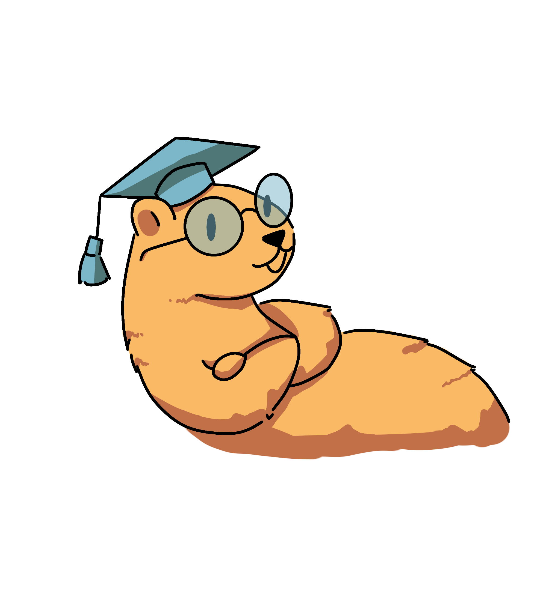
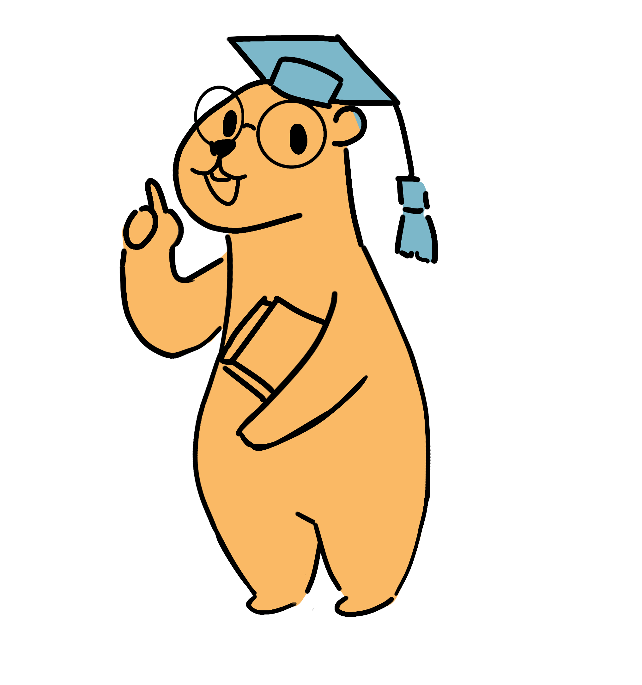
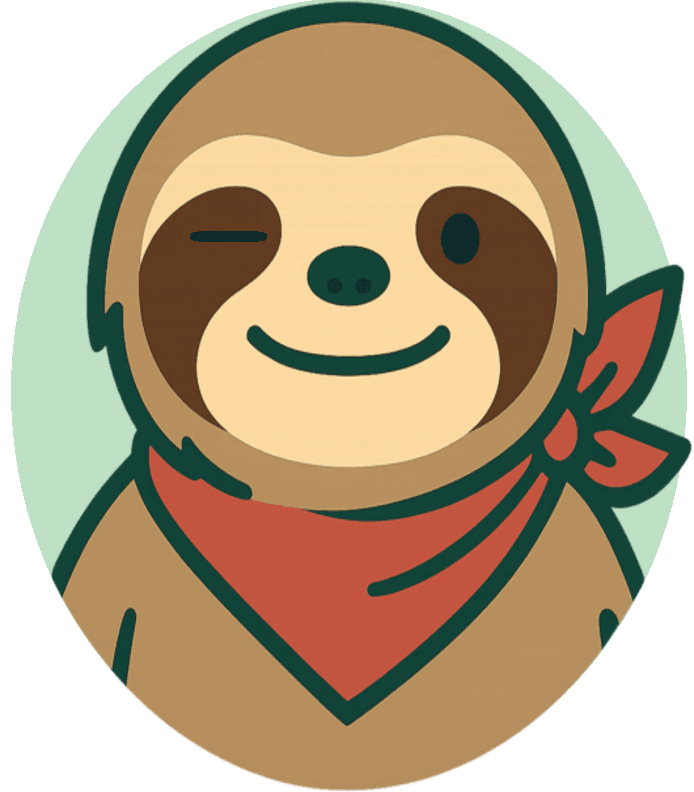
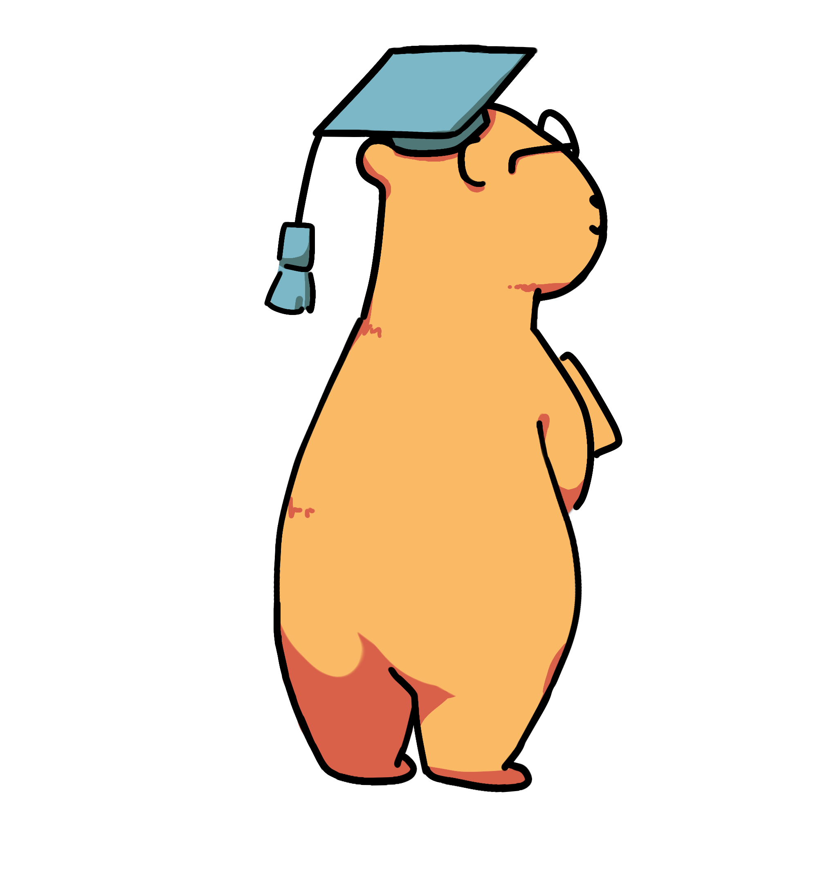

Educación Personalizada que
Transforma Vidas.
Plataforma SaaS para conectar docentes y estudiantes en tiempo real, optimizando el aprendizaje personalizado con inteligencia cognitiva y acompañamiento empático liderado por nuestra mascota Aren el Capibara.
"¡Hola! Soy Aren el Capibara. Estoy aquí para acompañarte en tu ruta de aprendizaje personalizada."
Aren: El Capibara Asistente Cognitivo
Aren acompaña a estudiantes y profesores durante cada clase, celebrando logros académicos, recordando repasos clave y reduciendo la ansiedad escolar.

Aren el Capibara
Asistente principal en la interfaz del estudiante. Guía los módulos de repaso y sugiere descansos cognitivos.
Compañero Perezoso
Avatar alternativo para modos de ritmo pausado y sesiones de concentración profunda.
5 Formas en que Aren y sus Amigos Acompañan el Aprendizaje
Cada rol de nuestros personajes responde a un objetivo pedagógico concreto: desde reducir la ansiedad escolar hasta afianzar la memoria a largo plazo.




Guía de Misiones Curriculares
Aren descompone tareas complejas y temarios densos en micro-misiones diarias digeribles. Esta metodología reduce la procrastinación en adolescentes al ofrecer un camino predecible y libre de agobio.
Transformando la Experiencia en el Aula
ArenAI fue concebido para responder a las dinámicas pedagógicas modernas y apoyar activamente tanto a docentes como a estudiantes.
Alineación con Estándares Educativos
Adhesión a normativas de protección de datos personales de menores y compatibilidad con programas formativos de aprendizaje continuo.
Reducción de Carga Administrativa
Permite a los profesores diagnosticar el nivel de grupo en tiempo real sin dedicar horas extras a la calificación manual de pruebas.
Galería & Demostración de Interfaz
Explora la experiencia de usuario diseñada tanto para el panel del profesor como para la vista interactiva del estudiante.
Próximamente: Panel de Monitoreo Docente
Estamos reimaginando el tablero del profesor con métricas de empatía y calor grupal. Próximamente podrás visualizar diagnósticos en tiempo real de comprensión estudiantil sin estrés evaluativo.
Próximamente: Interfaz Asistida por Aren
El portal personal del alumno donde Aren acompaña cada descubrimiento con micro-desafíos lúdicos adaptativos y pausas conscientes para evitar la sobrecarga cognitiva.
¿Cuál es la derivada de la función f(x) = 3x² + 5?
¡Un Bug de Matrices salvaje ha aparecido! Responde rápido al estilo Kahoot: ¡entre más veloz aciertes, mayor daño crítico le harás!
Tecnología al Servicio de la Educación
Diseñada con rigor científico y sensibilidad humana. Una arquitectura modular que protege la privacidad del estudiante y habilita dinámicas gamificadas de baja latencia.
Conexión Directa en el Aula
Comunicación bidireccional de ultrabaja latencia que permite sincronizar ejercicios entre el profesor y sus estudiantes al instante, incluso en redes de aula local sin depender de internet continuo.
Curva del Olvido y Retención
Modelos matriciales basados en investigaciones sobre la psicología del adolescente para reforzar conceptos en el momento óptimo sin generar frustración ni sobrecarga.
Rutas de Aprendizaje a tu Ritmo
Estructuración del plan de estudios en mapas conceptuales interactivos que se ramifican y adaptan según el ritmo propio y los logros de cada alumno.
Node • Electron • TS/JS • Python • Docker
Desarrollo multiplataforma (escritorio y web) desplegable en contenedores Docker aislados, garantizando máxima seguridad de datos de menores y portabilidad en colegios.
Autores e Investigadores del Proyecto
ArenAI fue concebido y desarrollado de forma colaborativa: unificando diseño gráfico y viabilidad económica, lógica del sistema con sockets en tiempo real, y procesamiento en la nube con base creativa de IA.
Leonardo Escobar
Diseño Gráfico, UI/UX & Viabilidad EconómicaDesarrollo de la interfaz gráfica y experiencia de usuario (UI/UX), análisis y manejo de precios reales del mercado, proyecciones financieras y estimaciones de costos para asegurar la viabilidad económica de la solución.
Yereth Soto Zúñiga
Lógica del Sistema & Sockets en Tiempo RealDesarrollo de la lógica central del motor educativo, estructuración algorítmica y canal de comunicación bidireccional mediante Sockets / WebSockets para sincronización de baja latencia en el aula.
Reishell Fernández
Procesamiento Cloud de IA & Base CreativaLiderazgo de la base creativa del proyecto, conceptualización estética y arquitectura de procesamiento en la nube para los modelos de inteligencia artificial y analítica pedagógica.